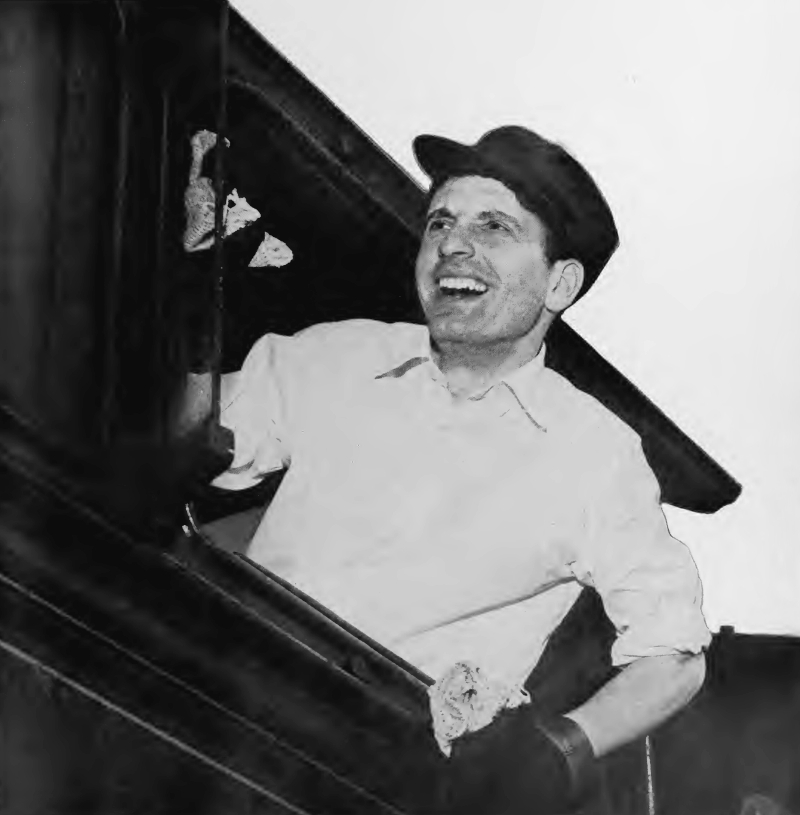

Tuesday · Music
(c. 1963–67): Britain sells America its own records back
After rationing, British teenagers learned guitar from American and 45s. , , and turned those records into a local scene. In 1964 American radio named the export a “.”

{kind=link}
“” is an American radio and press name for British hitting the U.S. charts after February 1964. From Britain the same years were also the end of rationing’s long after-effect, a that still limited how many records it could play, ships, and a generation that had learned guitar from American and records. This lesson looks out from Britain. , , French , and Japanese were running in the same years. They are not decoration, and they are not a required Asia pairing.
Select any words, or tap a dotted term.
- 1954–56 After rationing Meat rationing ended in 1954. ’s “” (1955–56) made a cheap way for teenagers to start a group.
- 1962 Labels / managers passed on ; and did not. was already managing them. London clubs were covering and records.
- 1964 Sullivan / Caroline appeared on on 9 February. began broadcasting from a ship in March. The American name “” arrived with those months.
- 1964 London riff released “.” kept their Chicago sources louder than variety television preferred.
- 1965–66 Elsewhere and were hit factories in the United States. were in the studio. bands were working in Japan. was already on French radio.
- 1967 The name shrinks , , and the . Psychedelia made “Invasion” too small a word for what the records were doing.
Before
After rationing, cheap guitars, and other people’s records
Postwar Britain did not jump from the Blitz to . Food rationing lasted into the 1950s; meat came off the ration in 1954. What followed was not sudden luxury. It was a narrower fact: a generation that had more pocket money than its parents at the same age, and not enough official culture that sounded as if it belonged to them. The ’s carried pop. It did not carry enough of it. agreements limited recorded music on air. If you wanted more than the official dose, you needed a radio that was not polite, a shop that imported American 45s, or — later — a ship that was not yet in British waters.
The records arrived first. and came as merchant-seamen singles, as classified imports, and as the B-sides of things the did not love. ’s “” was a 1958 single from Chicago. , , , and the 45s were the rest of the homework. In Britain they were not yet a museum. They were what you learned if you wanted a group.

{kind=link}

{kind=link}
made the homework cheap. ’s “” — a song, recorded in London — became a British hit in 1955–56. A washboard and a tea-chest bass were enough to start. ’s were a band. So were many of the people who later grew fringes in Liverpool, London, and Manchester. did a related job: Liverpool College of Art, Ealing, Sidcup, and the London colleges that , , and others passed through. They were not conservatories. They were cheap places where looking hard was a skill and a group could be a project.

{kind=link}
By the early 1960s the scenes were local before they were a national story. Liverpool had the and a density of later tagged . London had the Marquee, the , and an circuit that treated as a source catalog. Manchester had . Newcastle had . Tottenham had . None of this required an American name yet. It required halls, managers, and a that still could not play the records as often as the rooms wanted them.
The era
How a local scene became an American headline
What Americans later called the was, from Britain, several overlapping facts. filled ballrooms and . and London were not the same accent: Liverpool sold harmony and a smile that television could use; London’s clubs sold covers and longer hair. The look traveled with the singles. , Italian suits, scooters, then as a boutique strip a tourist could photograph. Teen papers — , , and the American fan magazines that followed — treated the groups as a weekly serial. The industry underneath was not a cottage. , , , managers such as and , and producers such as were large companies and a few intermediaries who had learned that a cellar residency could be a product.

The American date is easy to point at and easy to overweight. Capitol issued ’ “” in the United States in late December 1963. On 9 February 1964 they played . After that, U.S. charts and variety television filled with British names: , , , , , , , , . “” is what American radio called those months. From London the same spring, began broadcasting from a ship. The still had a problem. The cameras and the pirates were answering the same shortage from different sides of the ocean.


The field
Many groups, and three ways they entered the story
A gallery of three faces is the wrong picture. The field is crowded on purpose. , , , , , , , , , — and behind them the American records they learned: , , , . Epstein and Oldham sold the dates. Martin, and the that said no, are the industry’s two hands. Donegan is the cheap starter kit. Sullivan is the American camera. Name them, then slow down for only a few, as examples inside the scene, not as the scene.
are the group American television used to introduce the rest. Liverpool, Hamburg, the , then . This lesson does not need another press shot of four men in suits. The useful facts are the repertoire and the timing. They had already learned Berry, , and the girl-group records. “” was a song American radio could not file as a foreign novelty for long. After Sullivan, every other British group on an American bill was using an introduction they had not made. That is not the same as saying the others were copies. It is a fact about cameras and charts.
are the debt left audible. London clubs, covers, Jagger and Richards, and Oldham’s refusal to package them as variety. They did not invent . They declined, longer than was polite, to pretend the covers were a phase. When they wrote their own songs, the debt was still the point: a British group selling America a Chicago idea with white faces on the same variety shows that had not booked the roster as pop. The honest version does not scold them for learning. It keeps the label in the shot.
are a different London hardness. “,” 1964: and , a riff that does not behave like a cover, and a speaker cone that the usual story says was sliced so the guitar would break up. Treat the hardware story as the usual one; the record is the fact. Liverpool’s export was blend. This was a two-chord shove from Muswell Hill. It is one record, not a theory of the decade. It is enough to stop the Invasion from being told as four smiling men and one television broadcast.
Elsewhere
The same years, not a ranking of songs
In Detroit, under was already a finished system — writers, a house band, a finishing school for movement. ’ “” is 1964. In Memphis, was cutting Southern soul with a biracial house band. In California were in the studio; , in 1966, is the comparison the syllabuses never let go. In France, — , — was already a word. In Japan, bands (, , ) were taking electric guitars into a market that had its own tradition.
Britain was not the only place the 45 rpm single was rewriting a generation. It was the place American television decided to point the camera. That is a fact about power, not a ranking of songs.
After
By 1967 the chart label no longer described the music
By 1966–67 the useful Invasion story — verse, chorus, suit, scream — was already too small. , then , then a lot of other people’s sitars and tape loops. The turn toward psychedelia was not a British monopoly; San Francisco is in the same late decade. The name “” stays useful as a 1964–65 American chart event. It is a poor name for everything that happened next.
The arrived in 1967. began the same year. The pirates were legislated against. The records did not disappear from British life.
A question
A question to keep asking
If a country sells another country its own music, who counts as the inventor in the room?
Fun fact
The BBC was limited in how many records it could play
Into the mid-1960s the was bound by : agreements with the Musicians’ Union that limited how many hours of records, as opposed to live studio bands, could be broadcast. Pirate ships were not only a teenage romance. They were a way around a labor and licensing rule. , created in 1967, was in part an official answer to that gap.